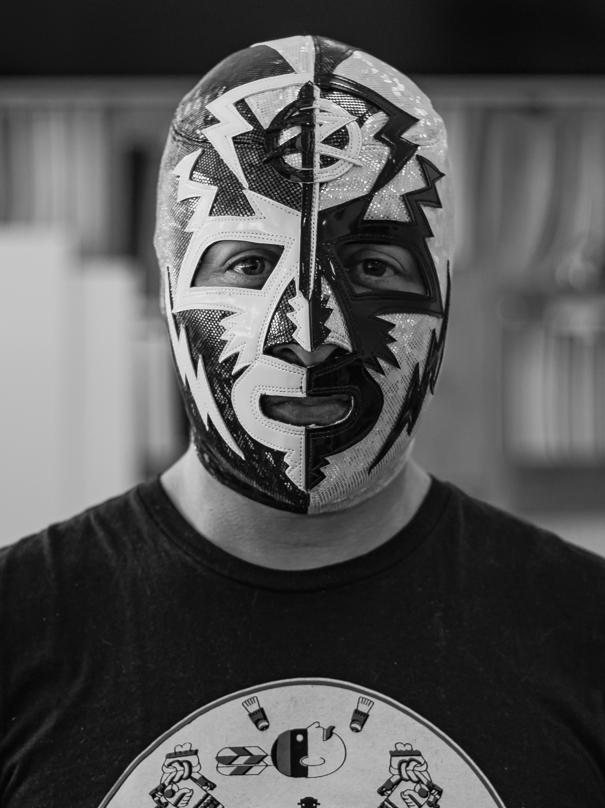
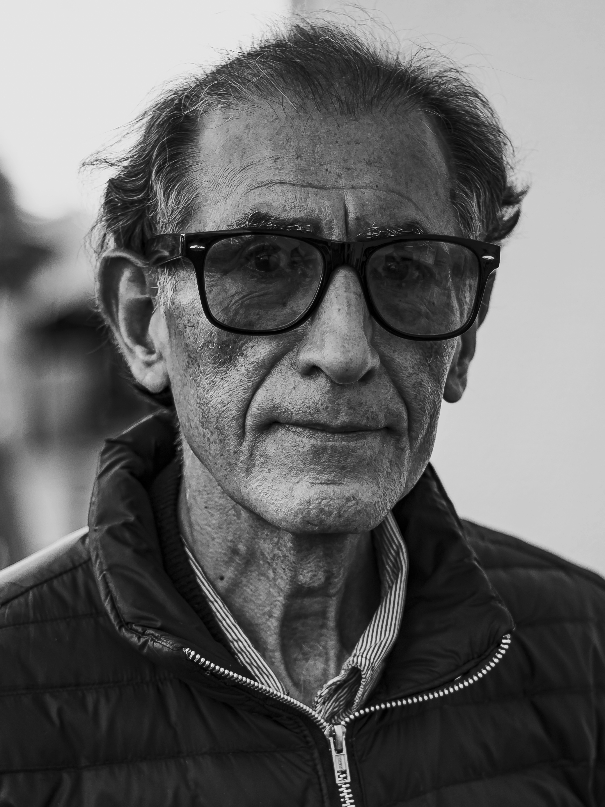
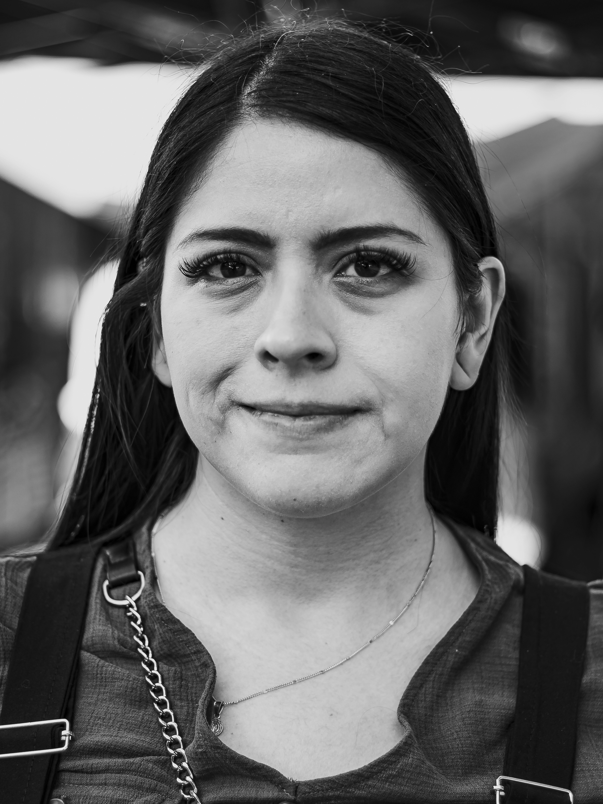
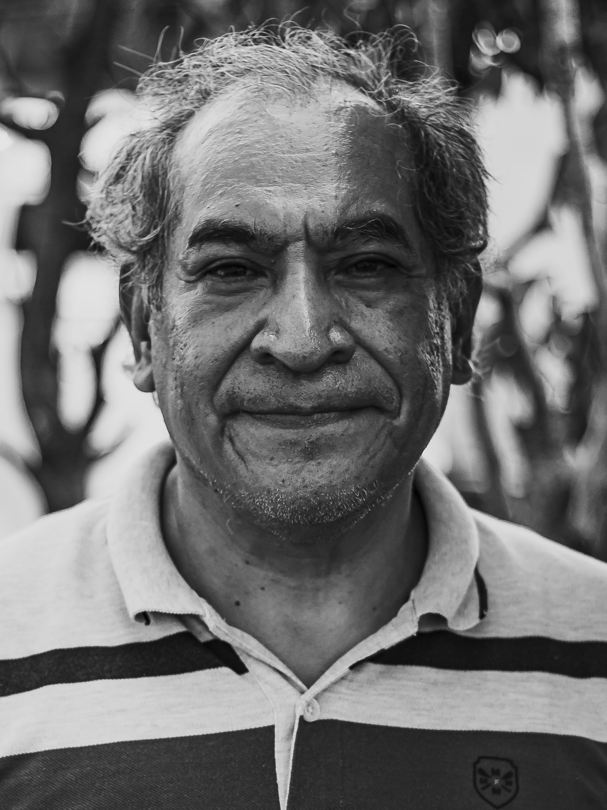
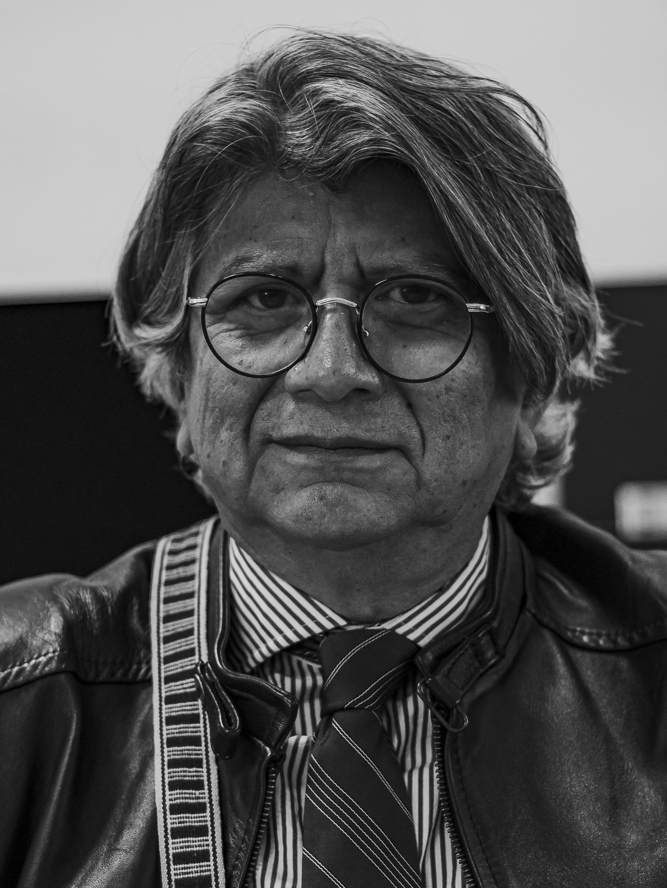
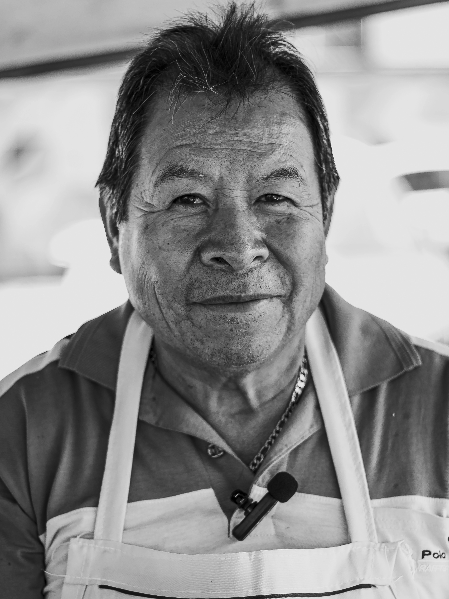

Hola, bienvenid@ a Historias de una Ciudad en Movimiento, en este espacio la intención es poder generar conciencia sobre el tema de la vida cotidiana y la desigualdad que ha estado presente en el país desde tiempo atrás, que las personas se pongan en el lugar de otros, ya que es importante entender que existen diferentes realidades y formas de vivir el día a día. Aquí podrán encontrar las fotografías realizadas a las personas que han confiado en este proyecto.





